One of my hobbies is collecting Kpop stuff. For people who are not interested in Kpop, they will think this hobby is a common hobby but it is an expensive hobby for Kpop fans because one of the collections known as photocards has a high value. One photocard can cost up to RM300. Photocards that are not rare are priced below RM100. Most of my collection is comprised of BTS merchandise.
So, this is only half of my collection.
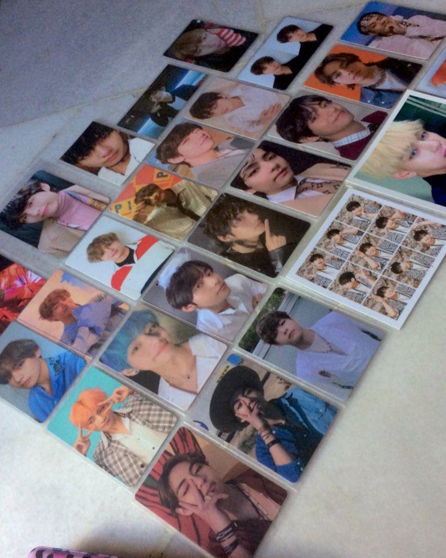 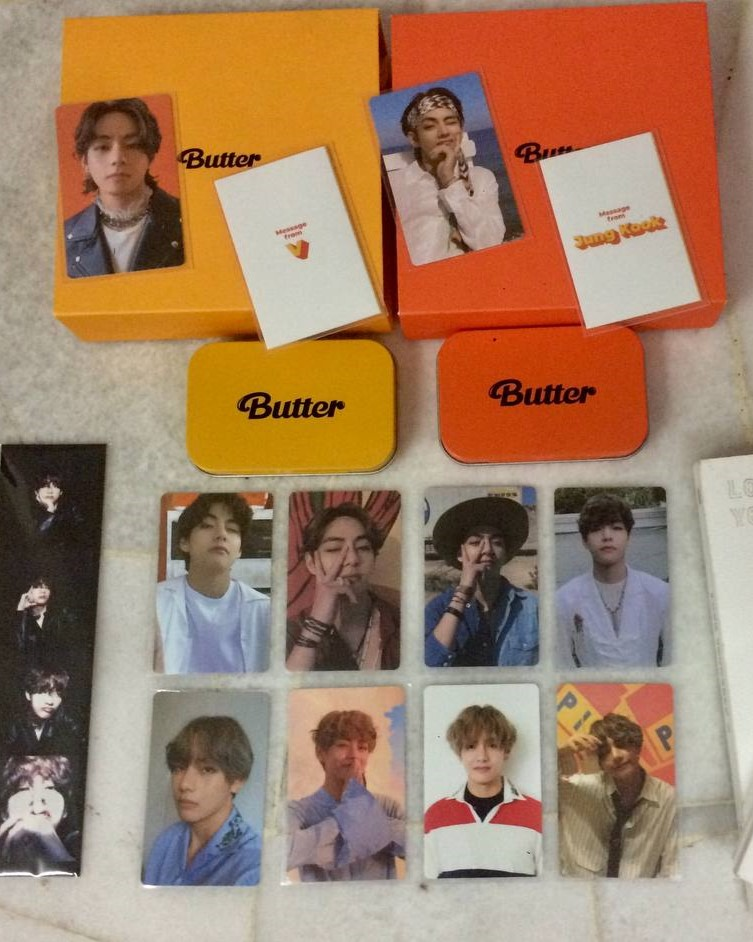When I have a free time, one of my best hobbies to do is playing with cats. Because of the incredibly cute character of the cats, I am able to forget about my problems for awhile when I look at them. This can be therapeutic for me. For your information, I have ten cats living here at my house.
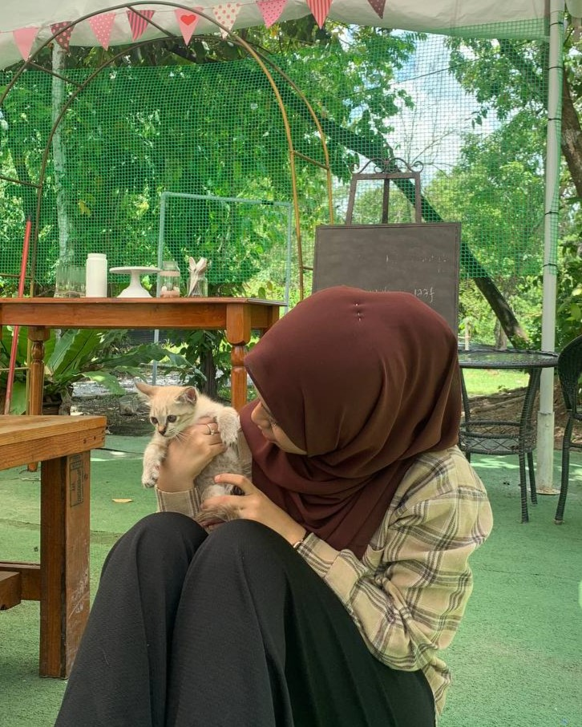 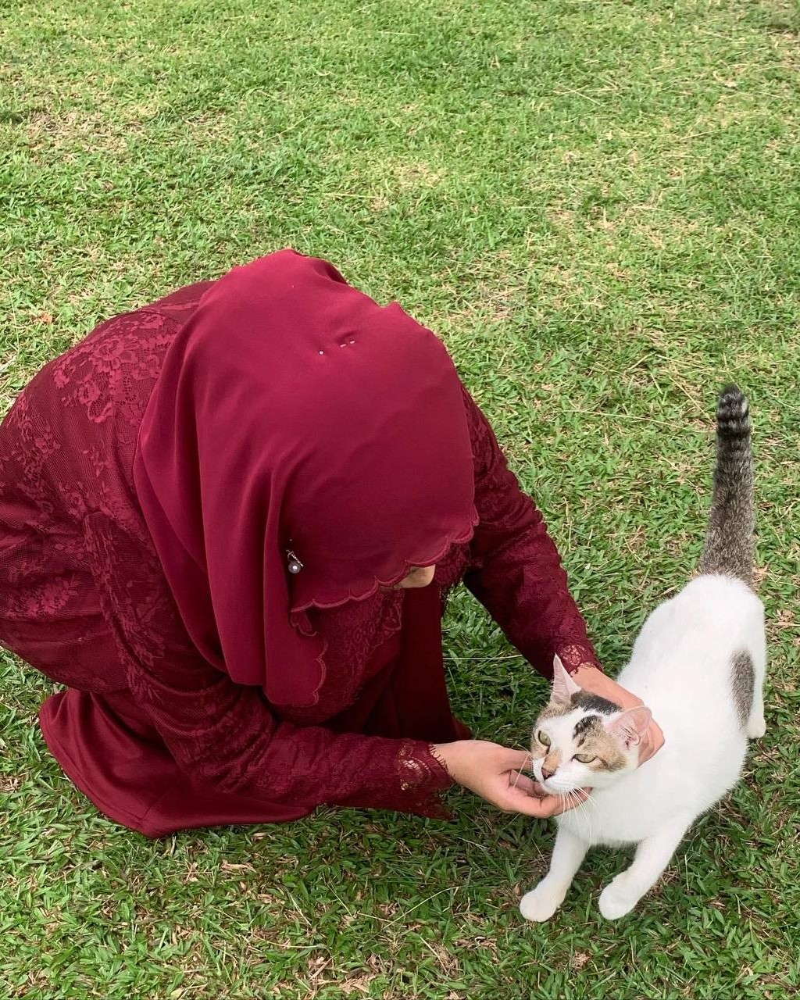This is one of the hobbies I've been interested in since 2022 because I get a sense of calm when I see the sunset, especially at the beach. I enjoy watching the aesthetic of the sunset because the color of the sky at that time is very beautiful. I always take a moment to appreciate the beauty of God's creation whenever I see a beautiful sunset.
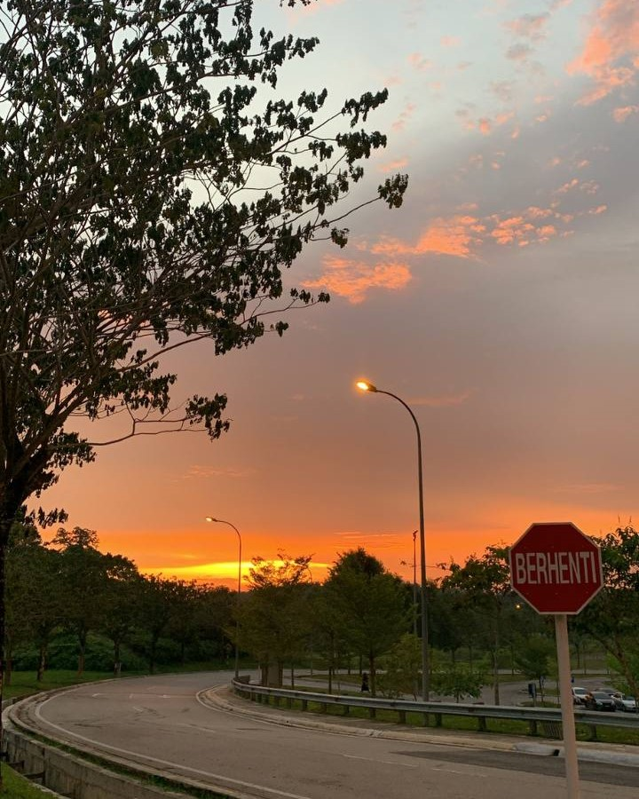 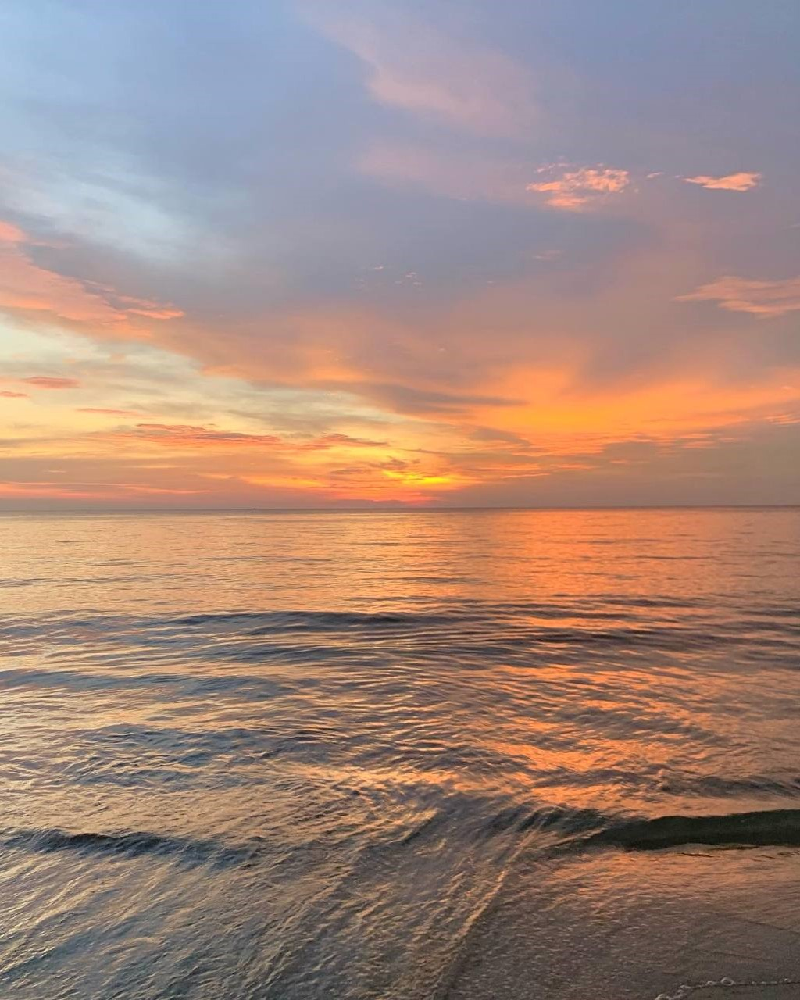When Malaysia was in lockdown due to the Covid-19 pandemic, I began to explore this new hobby. This is because I completed SPM in 2019 and was unsure of what I wanted to do with myself at home until one day I finally came across a video about digital art on Instagram. So, when I was bored during the lockdown, I tried drawing and eventually made it a hobby. Adobe Illustrator is the application I use to draw.
So, this is a few of the drawing that I drew during the lockdown.
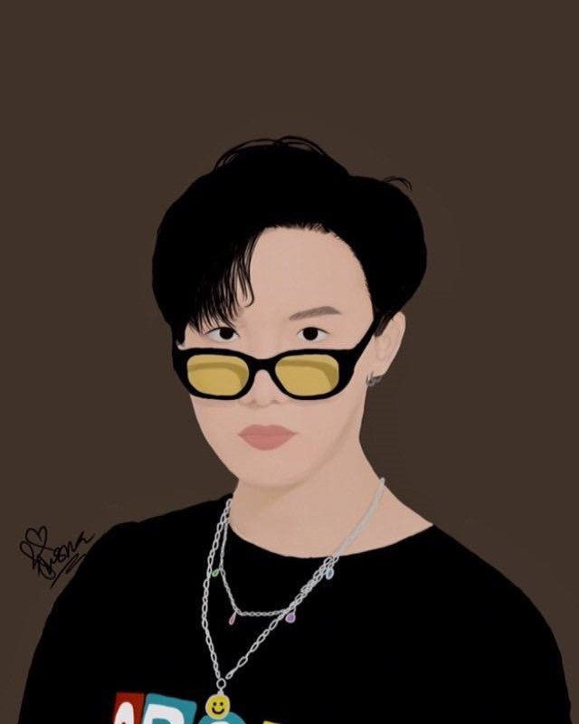 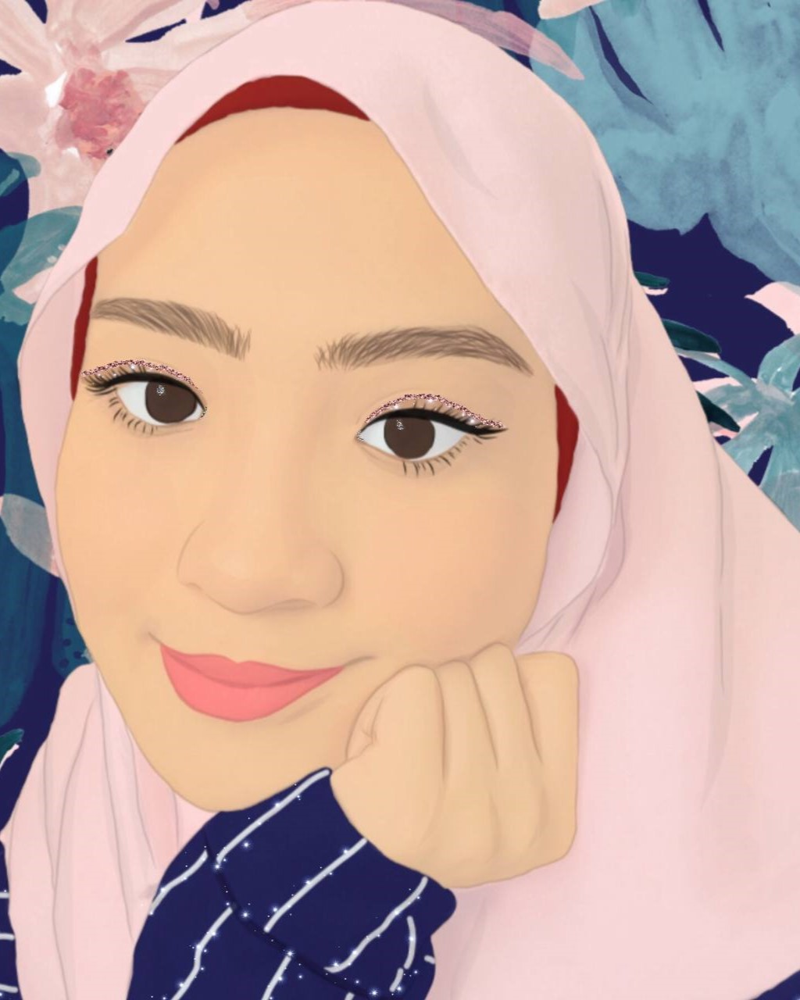During the time that I was employed as a part-time at a home decor shop, I filled my free time by making flower arrangements and decorating them. I enjoy looking at the various colours that the flowers have. It is very beautiful and attractive to the eyes.
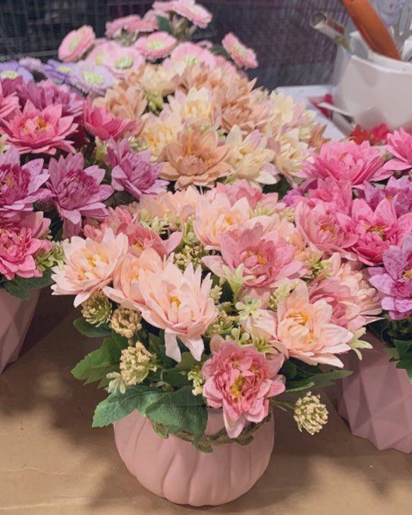 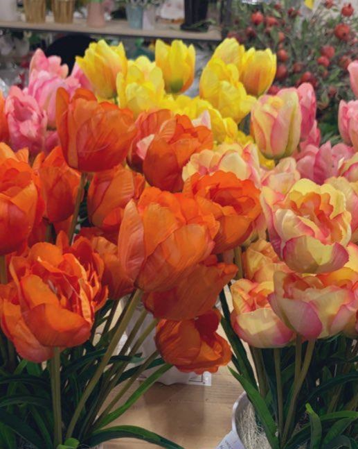When I feel bored and unsure of what to do at home, I will invite my friends or my siblings to go out and do things with me that will occupy our free time, such as going to the movies, bowling, and food hunting.
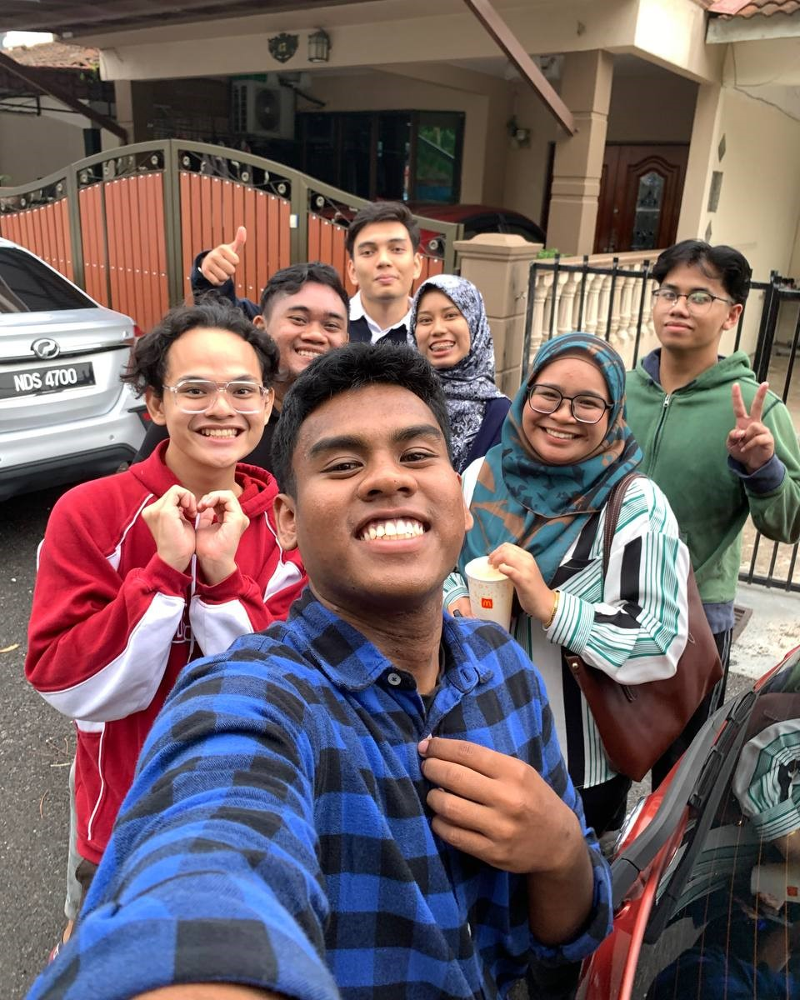 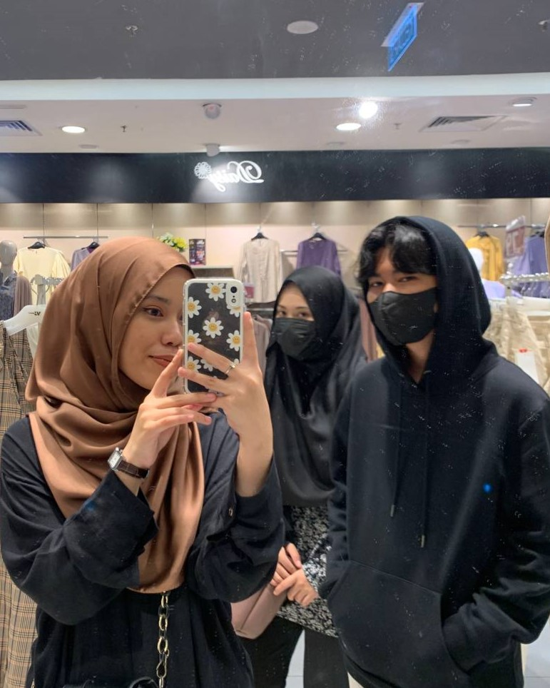